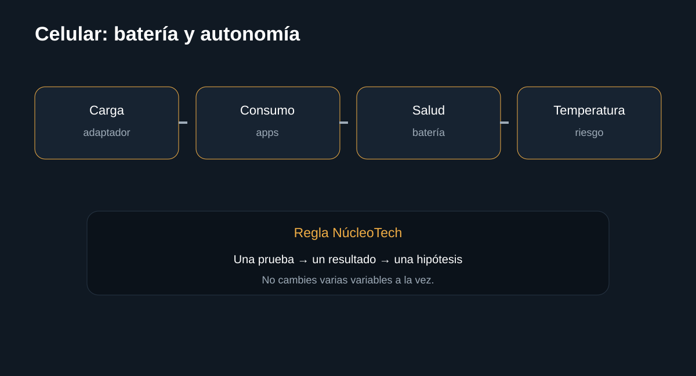

Introducción

Diagnóstico práctico para separar consumo de software, cargador, temperatura y batería. La guía busca que puedas separar causas antes de sustituir componentes.
Antes de empezar: seguridad
Desconecta el equipo cuando corresponda y no realices mediciones peligrosas sin formación e instrumental. En baterías, fuentes y placas, detén el procedimiento si detectas daño físico, líquido, olor extraño o calor anormal.
- Documenta el estado inicial.
- Haz una sola modificación cada vez.
- Conserva tornillos, cables y configuración original.
Herramientas
1. Registrar patrón
La autonomía depende de uso, señal, pantalla y aplicaciones.
Qué hacer
- Anota cuándo se descarga.
- Compara reposo y uso intenso.
- Observa temperatura.
Registra el resultado antes de continuar.
InterpretaciónLa autonomía depende de uso, señal, pantalla y aplicaciones.
2. Revisar consumo
Busca la aplicación o función que explica el consumo.
Qué hacer
- Consulta uso de batería del sistema.
- Actualiza aplicaciones problemáticas.
- Comprueba brillo, señal y servicios de ubicación.
Registra el resultado antes de continuar.
InterpretaciónBusca la aplicación o función que explica el consumo.
3. Revisar carga
Una carga deficiente puede parecer una batería mala.

Qué hacer
- Prueba cargador y cable compatibles.
- Revisa el puerto.
- Observa si la carga se interrumpe.
Registra el resultado antes de continuar.
InterpretaciónUna carga deficiente puede parecer una batería mala.
4. Seguridad de batería
Una batería hinchada o con calor anormal no debe seguir utilizándose.
Qué hacer
- Deja de cargar.
- No la perfores ni la dobles.
- Busca servicio técnico cualificado.
Registra el resultado antes de continuar.
InterpretaciónUna batería hinchada o con calor anormal no debe seguir utilizándose.
Diagnóstico final
Fuentes y notas
Google recomienda comprobar cargador, cable, toma y puerto cuando un Android no carga, y detener la intervención si aparecen síntomas que requieren servicio. La ruta exacta depende del fabricante.